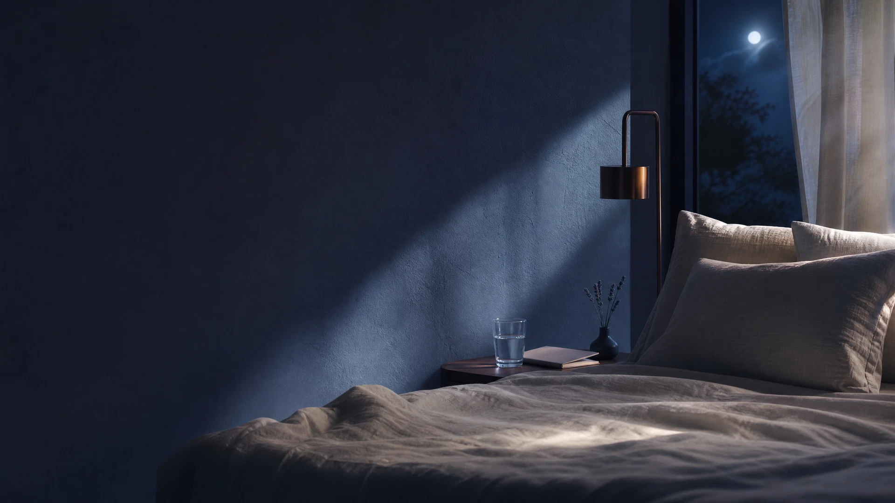

Ritual Nocturno de Aproximadamente 5 minutos
La práctica principal para respirar, escuchar y repetir mientras marcas una transición entre el día y la noche.
 DecretosNocturnosVer qué incluye ↓
DecretosNocturnosVer qué incluye ↓Apagas la luz. Te acuestas. Y justo cuando todo queda en silencio, tu mente empieza a repasar conversaciones, pendientes, problemas y lo que podría ocurrir mañana.
Decretos Nocturnos es un ritual guiado de aproximadamente 5 minutos para cerrar el día con más calma.
Quiero empezar mi ritual esta noche ↗Acceso inmediato · Desde tu teléfono · Sin experiencia previa
Quizá ya probaste música, respiración, frases positivas o decirte que mañana será diferente. Pero llega otra noche y vuelve lo mismo.
No necesitas otra lista de consejos. Necesitas una rutina breve y concreta para saber qué hacer cuando tu mente no quiere bajar el volumen.
 UN RITUAL
UN RITUALDurante unos minutos podrás dirigir suavemente tu atención al cuerpo, escuchar palabras de calma y dejar de perseguir cada pensamiento.
No necesitas meditar durante una hora. No tienes que hacerlo perfecto.
Solo necesitas unos minutos y un lugar cómodo.
Un recorrido concreto, flexible y amable. Puedes volver a la pieza que necesites esta noche.
La práctica principal para respirar, escuchar y repetir mientras marcas una transición entre el día y la noche.
Frases breves para llevar tu atención hacia el cuidado, la presencia y la gratitud.
Una guía para soltar tensión y utilizar palabras que puedas adaptar.
Un ejercicio sencillo para cuando aparecen una y otra vez los mismos problemas.
Un recorrido flexible para repetir sin presión y retomar cuando estés listo/a.
No todas las noches son iguales. A veces necesitas una puerta más pequeña para empezar.
Frases breves para cuando no sepas qué decirte.
Una práctica corta para dejar atrás mentalmente lo ocurrido.
Una alternativa para cuando estés especialmente despierto/a o saturado/a.
Decretos Nocturnos no promete que te dormirás instantáneamente ni sustituye un tratamiento médico o psicológico.
Te ofrece algo más concreto: una forma sencilla de dejar de luchar con el final del día y crear un espacio de calma antes de descansar.
No necesitas resolverlo todo esta noche.
Con tu acceso recibes el ritual completo y sus contenidos de apoyo para volver a la calma cuando lo necesites.
No. Está diseñado para personas que nunca han meditado o utilizado afirmaciones.
La práctica principal dura aproximadamente 5 minutos. También tienes una alternativa de tres minutos.
Sí. Solo necesitas una posición cómoda y unos minutos de atención.
No. Es una práctica complementaria de bienestar y no sustituye atención profesional.
Puedes apagar las luces, dejar el teléfono, respirar, escuchar y repetir.
Quiero empezar esta noche ↗